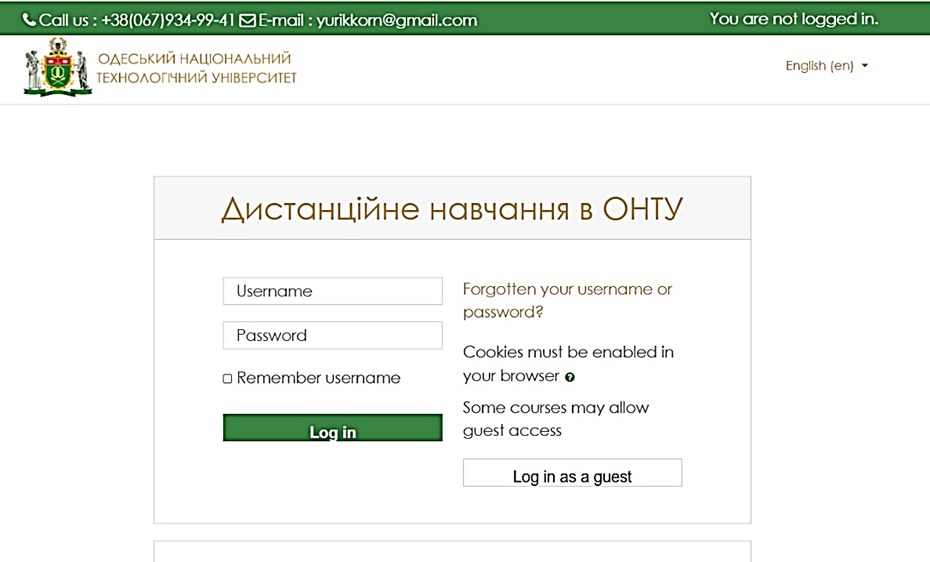
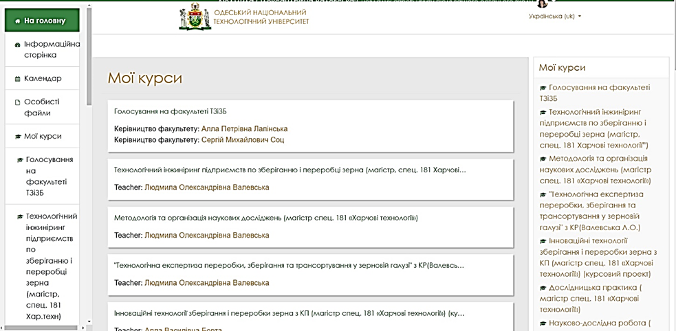
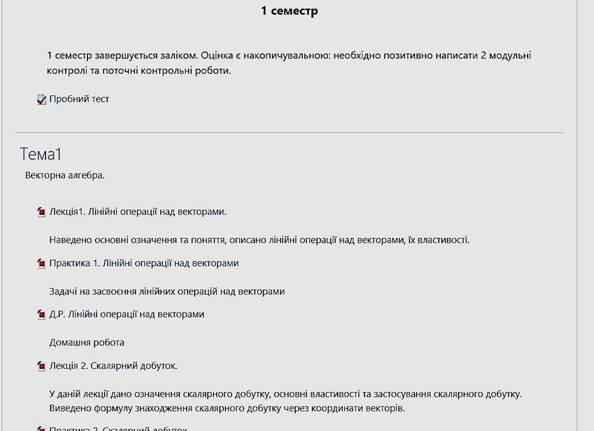

Для організації навчання з використанням технологій дистанційного навчання (ДН) спочатку необхідно зареєструватись в системі ДН. Для цього треба звернутись з листом до відділу організації дистанційної роботи на навчання за електронною адресою: yurikkorn@gmail.com, де вказати свої прізвище, ім’я, по батькові, кафедру, назву електронного (дистанційного) курсу(ів). У відповідь викладач одержить власні реєстраційні дані (логін (Username), пароль (Password)) для входу у систему ДН за адресою: http://moodle.ontu.edu.ua. (Рис.1.1).

Рис.1.1. Вхід до системи дистанційного навчанняПісля коректного введення даних (слідкувати за регістром клавіатури), тобто Username та Password користувач натискає кнопку «Login» та потрапляє до своїх курсів (Рис.1.2) і згодом поступово наповнює їх необхідними матеріалами. Створення та розміщення електронних (дистанційних) курсів відбувається в системі навчання Moodle. Moodle є одною з найбільш розвинених систем електронного навчання, яка має багатомовний інтерфейс, надає можливість організувати повноцінний навчальний процес, включаючи засоби навчання, систему контролю й оцінювання навчальної діяльності студентів, а також інші необхідні складові системи підтримки навчального процесу. На даному етапі використання система на базі Moodle застосовується для підтримки традиційного навчання на денній і заочній формах навчання, зокрема для організації самостійної роботи студентів. Для того, щоб використовувати можливості системи, треба мати комп’ютер, підключений до мережі Інтернет.

Рис.1.2. Вхід до власних курсів в системі MoodleПри створенні дистанційного курсу бажано користуватися даними рекомендаціями.
При виникненні будь-яких труднощів при створенні власного курсу викладачі звертаються до співробітників відділу організації дистанційної роботи та навчання за електронною адресою: yurikkorn@gmail.com. Для оперативного зв’язку використовуйте телефон (номери також вказані на сторінці відділу на сайті академії за адресою: https://www.onaft.edu.ua/dlc).
За замовленням викладача можливо його підключення до будь-якого якісно створеного дистанційного курсу (можна запропонувати «Українська мова (за професійним спрямуванням)» з циклу Гуманітарної та соціально-економічної підготовки, «Фізика» або «Вища математика» з циклу Математичної, природничо-наукової підготовки, «Організація баз даних» з циклу Професійної та практичної підготовки. Слід відмітити, що розглядати будь-який з цих курсів треба тільки як приклад, автор у своєму курсі може розміщувати матеріали за власним бажанням.
Матеріал по кожній дисципліні повинен бути розділений на окремі теми, рекомендований формат представлення – *.pdf (хоча не виключаються звичайні формати текстового матеріалу *.doc, *.docx, *.rtf та інші).
Рекомендована структура курсу електронного навчання:
Як приклад, на Рисунку 2.1 наведений фрагмент створеного дистанційного курсу Вищої математики.
Разом з тим, для якісного забезпечення навчання, крім вказаних вище матеріалів, було б доцільно підготувати також відео- та аудіозаписи лекцій, семінарів тощо, різні відео-демонстрації. Файли відео- та аудіозаписів можуть мати будь-який формат (*.avi, *.mpeg, *.flv та інші), розмір не повинен перевищувати 50 МБ. При наявності можливо також включити до курсу віртуальні лабораторні роботи, віртуальні тренажери, ділові ігри з методичними рекомендаціями по їх використанню та виконанню. Крім того, можливі також посилання на зовнішні електронні ресурси (наприклад, YouTube), де розміщені необхідні матеріали (найчастіше відео-файли). Останнє є дуже корисним при наявності великих за розміром та одночасно якісних матеріалів по дисципліні. Відповідне посилання розміщується в курсі, студент при натисненні на посилання переміщується на вказану адресу, дивиться матеріал, а після закінчення перегляду повертається назад до курсу.

Рис.2.1. Фрагмент створеного курсу Вищої математики